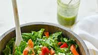

Ingredients
For the Vinaigrette
- 1 cup loosely packed fresh Italian parsley leaves
- 1 cup loosely packed fresh basil leaves
- ¼ teaspoon dried oregano
- 2 cloves garlic, peeled
- ¼ cup red wine vinegar, best quality such as Pompeian Gourmet
-
¾ cup extra virgin olive oil, best quality such as Lucini or Colavita
- Heaping ¾ teaspoon salt
- ¼ teaspoon ground black pepper
- 1½ teaspoons honey
For the Salad
-
1 large head romaine lettuce (or 3 hearts), washed, dried and cut into
large, bite-sized pieces
- 1 large red bell pepper, chopped
- 1 cup seeded and chopped hothouse cucumbers
- 1 to 2 carrots, peeled into ribbons
- Handful grape tomatoes, halved
- Handful pitted olives
- Ricotta Salata (see note) or Feta, crumbled to taste
Steps
-
Make the dressing: Combine all dressing ingredients in a food
processor and blitz to blend.
-
Place all of the salad ingredients except for the cheese in a large
bowl. Right before serving, add about half of the dressing and toss
well. Add more dressing little by little as necessary; be sure to
dress greens very generously, otherwise salad will be bland. Toss in
the cheese, then taste and adjust seasoning with salt and pepper, if
necessary.
-
Note: Ricotta salata is an Italian sheep's milk cheese that has a
salty, slightly tangy flavor, almost like a dry Italian feta. It is
not the same as the wet ricotta in the tub. You can find it at Whole
Foods, gourmet grocers or specialty cheese shops.